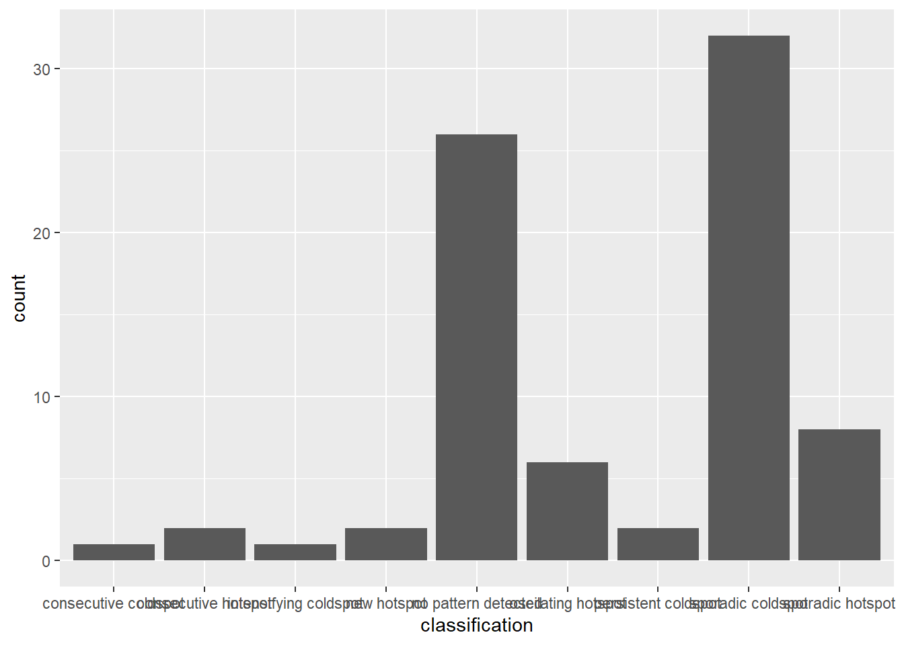
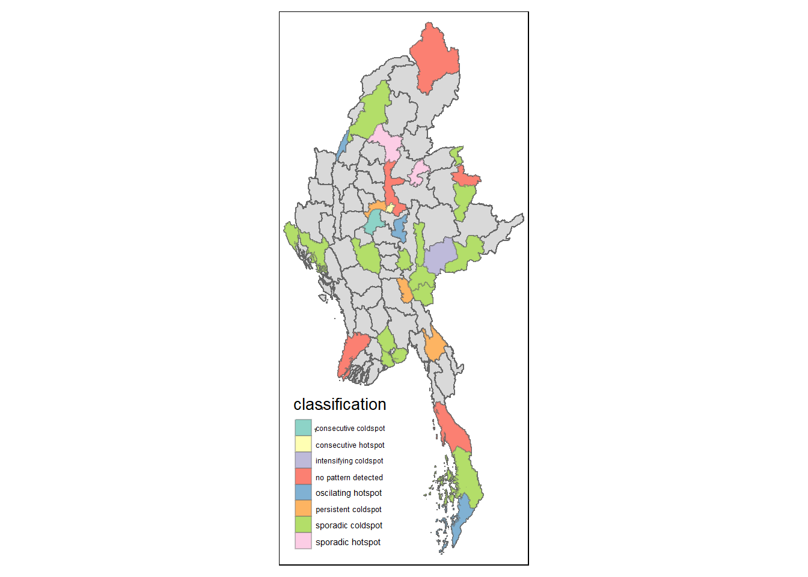

pacman::p_load(tidyverse, dplyr ,
sf, lubridate,plotly,
tmap, spdep, sfdep)Geospatial Analysis2 - Emerging Hot Spot Analysis
Overview
In this page, I will be exploring the codes for the plots in our Geospatial Analysis module of our Shiny Application. Specifically, I will be plotting the Emerging Hot Spot Map.
Emerging Hot Spot Analysis: sfdep methods
Emerging Hot Spot Analysis (EHSA) is a spatio-temporal analysis method for revealing and describing how hot spot and cold spot areas evolve over time.
The analysis consist of four main steps:
Building a space-time cube,
Calculating Getis-Ord local Gi* statistic for each bin by using an FDR correction,
Evaluating these hot and cold spot trends by using Mann-Kendall trend test,
Categorising each study area location by referring to the resultant trend z-score and p-value for each location with data, and with the hot spot z-score and p-value for each bin.
Loading R Packages and Data Prep
Shapes files for Myanmar admin2 levels
mmr_shp_mimu_2 <- st_read(dsn = "data/geospatial3",
layer = "mmr_polbnda_adm2_250k_mimu")Reading layer `mmr_polbnda_adm2_250k_mimu' from data source
`C:\imranmi\imran's data sc\R-ex\R-Ex7\data\geospatial3' using driver `ESRI Shapefile'
Simple feature collection with 80 features and 7 fields
Geometry type: MULTIPOLYGON
Dimension: XY
Bounding box: xmin: 92.1721 ymin: 9.696844 xmax: 101.17 ymax: 28.54554
Geodetic CRS: WGS 84Data Wrangle for quarterly data
As per project requirements, we will sync the time frame for this analysis to be the same as our previous LISA analysis. Therefore, we will set up the data set to be for 2021-2023, and in quarterly periods
I won’t repeat the data prep steps again, as this has already been done in previous prototype page. I will read in the previously prepared quarterly data for 2021-2023 instead.
Events_2 <- read_csv("data/df1_complete.csv")Since this data set has been filled up for missing values, using tidyr::complete() , I can proceed to use the standard spacetime constructor ie spacetime()
Creating a Time Series Cube
In the code chunk below, spacetime() of sfdep is used to create an spatio-temporal cube.
First, loc_col identifier needs to be the same name for both data and shape file.
Events_2 <- Events_2 %>%
filter(event_type == "Battles") %>%
rename(DT=admin2) %>%
select(-event_type, -year, -Fatalities) Quarterly_spt <- spacetime(Events_2, mmr_shp_mimu_2,
.loc_col = "DT",
.time_col = "quarter")is_spacetime_cube(Quarterly_spt)[1] TRUEComputing Gi*
Next, we will compute the local Gi* statistics.
Deriving the spatial weights
The code below will be used to identify neighbors and to derive an inverse distance weights.
Quarterly_nb <- Quarterly_spt %>%
activate("geometry") %>%
mutate(nb = include_self(st_contiguity(geometry)),
wt = st_inverse_distance(nb, geometry,
scale = 1,
alpha = 1),
.before = 1) %>%
set_nbs("nb") %>%
set_wts("wt")
Note
activate()of dplyr package is used to activate the geometry contextmutate()of dplyr package is used to create two new columns nb and wt.Then we will activate the data context again and copy over the nb and wt columns to each time-slice using
set_nbs()andset_wts()- row order is very important so do not rearrange the observations after using
set_nbs()orset_wts().
- row order is very important so do not rearrange the observations after using
Note that the data sets now have neighbors and weights for each time-slice.
head(Quarterly_nb)# A tibble: 6 × 5
quarter DT Incidents nb wt
<dbl> <chr> <dbl> <list> <list>
1 20211 Hinthada 0 <int [7]> <dbl [7]>
2 20211 Labutta 0 <int [3]> <dbl [3]>
3 20211 Maubin 0 <int [7]> <dbl [7]>
4 20211 Myaungmya 0 <int [5]> <dbl [5]>
5 20211 Pathein 0 <int [5]> <dbl [5]>
6 20211 Pyapon 0 <int [5]> <dbl [5]>Computing Gi*
We can use these new columns to manually calculate the local Gi* for each location. We can do this by grouping by year and using local_gstar_perm() of sfdep package. After which, we use unnest() to unnest gi_star column of the newly created gi_starts data.frame.
#for Quarterly admin 2
gi_stars3 <- Quarterly_nb %>%
group_by(quarter) %>%
mutate(gi_star = local_gstar_perm(
Incidents, nb, wt)) %>%
tidyr::unnest(gi_star)gi_stars3# A tibble: 960 × 15
# Groups: quarter [12]
quarter DT Incidents nb wt gi_star cluster e_gi var_gi std_dev
<dbl> <chr> <dbl> <lis> <lis> <dbl> <fct> <dbl> <dbl> <dbl>
1 20211 Hintha… 0 <int> <dbl> -0.938 Low 0.00926 1.46e-4 -0.766
2 20211 Labutta 0 <int> <dbl> -0.645 Low 0.00598 1.91e-4 -0.432
3 20211 Maubin 0 <int> <dbl> -0.938 Low 0.00941 1.52e-4 -0.764
4 20211 Myaung… 0 <int> <dbl> -0.801 Low 0.00758 1.48e-4 -0.624
5 20211 Pathein 0 <int> <dbl> -0.801 Low 0.00844 1.61e-4 -0.665
6 20211 Pyapon 0 <int> <dbl> -0.801 Low 0.00890 1.96e-4 -0.636
7 20211 Bago 1 <int> <dbl> 0.321 Low 0.0113 1.51e-4 0.450
8 20211 Taungoo 8 <int> <dbl> 0.432 High 0.0217 1.42e-4 -0.320
9 20211 Pyay 0 <int> <dbl> -0.337 Low 0.00911 1.62e-4 -0.113
10 20211 Thayar… 0 <int> <dbl> -0.270 Low 0.00925 1.75e-4 -0.0466
# ℹ 950 more rows
# ℹ 5 more variables: p_value <dbl>, p_sim <dbl>, p_folded_sim <dbl>,
# skewness <dbl>, kurtosis <dbl>Mann-Kendall Test
With these Gi* measures we can then evaluate each location for a trend using the Mann-Kendall test.
The code chunk below uses Hinthada region.
cbg3 <- gi_stars3 %>%
ungroup() %>%
filter(DT == "Hinthada") |>
select(DT, quarter, gi_star)Next, we plot the result by using ggplotly() of plotly package.
Hinthada district quarterly
p3 <- ggplot(data = cbg3,
aes(x = quarter,
y = gi_star)) +
geom_line() +
theme_light()
ggplotly(p3)Mann Kendall test for Hinthada district-quarterly
cbg3 %>%
summarise(mk = list(
unclass(
Kendall::MannKendall(gi_star)))) %>%
tidyr::unnest_wider(mk)# A tibble: 1 × 5
tau sl S D varS
<dbl> <dbl> <dbl> <dbl> <dbl>
1 -0.242 0.304 -16 66.0 213.Values of Mann Kendall test.
tau |
Kendall’s tau statistic |
sl |
two-sided p-value |
S |
Kendall Score |
D |
denominator, tau=S/D |
varS |
variance of S |
We can replicate this for each location by using group_by() of dplyr package.
Admin 2 districts-quarterly
ehsa3 <- gi_stars3 %>%
group_by(DT) %>%
summarise(mk = list(
unclass(
Kendall::MannKendall(gi_star)))) %>%
tidyr::unnest_wider(mk)ehsa3# A tibble: 80 × 6
DT tau sl S D varS
<chr> <dbl> <dbl> <dbl> <dbl> <dbl>
1 Bago -0.0606 0.837 -4 66.0 213.
2 Bawlake -0.333 0.150 -22 66.0 213.
3 Bhamo -0.303 0.193 -20 66.0 213.
4 Danu Self-Administered Zone -0.394 0.0865 -26 66.0 213.
5 Dawei 0.515 0.0236 34 66.0 213.
6 Det Khi Na -0.212 0.373 -14 66.0 213.
7 Falam -0.333 0.150 -22 66.0 213.
8 Gangaw 0.121 0.631 8 66.0 213.
9 Hakha -0.0303 0.945 -2 66.0 213.
10 Hinthada -0.242 0.304 -16 66.0 213.
# ℹ 70 more rows
Arrange to show significant emerging hot/cold spots
Admin 2 districts-quarterly
emerging3 <- ehsa3 %>%
arrange(sl, abs(tau)) %>%
slice(1:5)
emerging3# A tibble: 5 × 6
DT tau sl S D varS
<chr> <dbl> <dbl> <dbl> <dbl> <dbl>
1 Mandalay 0.667 0.00319 44 66.0 213.
2 Maubin -0.667 0.00319 -44 66.0 213.
3 Pyapon -0.667 0.00319 -44 66.0 213.
4 Pyinoolwin 0.636 0.00493 42 66.0 213.
5 Yangon (West) -0.636 0.00493 -42 66.0 213.Performing Emerging Hotspot Analysis
Lastly, we will perform EHSA analysis by using emerging_hotspot_analysis() of sfdep package. It takes a spacetime object x (i.e quarterly_spt), and the quoted name of the variable of interest (i.e. Incidents) for .var argument.
The k argument is used to specify the number of time lags which is set to 1 by default.
Lastly, nsim map numbers of simulation to be performed.
ehsa3 <- emerging_hotspot_analysis(
x = Quarterly_spt,
.var = "Incidents",
k = 1,
nsim = 99
)print(ehsa3)# A tibble: 80 × 4
location tau p_value classification
<chr> <dbl> <dbl> <chr>
1 Hinthada 0.152 0.537 no pattern detected
2 Labutta -0.242 0.304 no pattern detected
3 Maubin -0.364 0.115 sporadic hotspot
4 Myaungmya -0.364 0.115 no pattern detected
5 Pathein 0.545 0.0164 no pattern detected
6 Pyapon 0 1 sporadic coldspot
7 Bago 0 1 no pattern detected
8 Taungoo 0.212 0.373 oscilating hotspot
9 Pyay 0.0303 0.945 sporadic hotspot
10 Thayarwady -0.152 0.537 sporadic coldspot
# ℹ 70 more rowsVisualising the distribution of EHSA classes
In the code chunk below, ggplot2 functions is used to reveal the distribution of EHSA classes as a bar chart.
Admin2 districts - quarterly
#| fig-width: 12
#| fig-height: 7
#| column: body-outset-right
ggplot(data = ehsa3,
aes(x = classification)) +
geom_bar()
Visualising EHSA
In this section, we will visualise the geographic distribution EHSA classes. However, before we can do so, we need to join (mmr_shp_mimu2 & ehsa3) together by using the code chunk below.
mmr3_ehsa <- mmr_shp_mimu_2 %>%
left_join(ehsa3,
by = join_by(DT == location))print(mmr3_ehsa)Simple feature collection with 80 features and 10 fields
Geometry type: MULTIPOLYGON
Dimension: XY
Bounding box: xmin: 92.1721 ymin: 9.696844 xmax: 101.17 ymax: 28.54554
Geodetic CRS: WGS 84
First 10 features:
OBJECTID ST ST_PCODE DT DT_PCODE DT_MMR PCode_V
1 1 Ayeyarwady MMR017 Hinthada MMR017D002 ဟင်္သာတခရိုင် 9.4
2 2 Ayeyarwady MMR017 Labutta MMR017D004 လပွတ္တာခရိုင် 9.4
3 3 Ayeyarwady MMR017 Maubin MMR017D005 မအူပင်ခရိုင် 9.4
4 4 Ayeyarwady MMR017 Myaungmya MMR017D003 မြောင်းမြခရိုင် 9.4
5 5 Ayeyarwady MMR017 Pathein MMR017D001 ပုသိမ်ခရိုင် 9.4
6 6 Ayeyarwady MMR017 Pyapon MMR017D006 ဖျာပုံခရိုင် 9.4
7 7 Bago (East) MMR007 Bago MMR007D001 ပဲခူးခရိုင် 9.4
8 8 Bago (East) MMR007 Taungoo MMR007D002 တောင်ငူခရိုင် 9.4
9 9 Bago (West) MMR008 Pyay MMR008D001 ပြည်ခရိုင် 9.4
10 10 Bago (West) MMR008 Thayarwady MMR008D002 သာယာဝတီခရိုင် 9.4
tau p_value classification geometry
1 0.15151514 0.5371338 no pattern detected MULTIPOLYGON (((95.12637 18...
2 -0.24242422 0.3036732 no pattern detected MULTIPOLYGON (((95.04462 15...
3 -0.36363631 0.1147567 sporadic hotspot MULTIPOLYGON (((95.38231 17...
4 -0.36363631 0.1147567 no pattern detected MULTIPOLYGON (((94.6942 16....
5 0.54545450 0.0163933 no pattern detected MULTIPOLYGON (((94.27572 15...
6 0.00000000 1.0000000 sporadic coldspot MULTIPOLYGON (((95.20798 15...
7 0.00000000 1.0000000 no pattern detected MULTIPOLYGON (((95.90674 18...
8 0.21212119 0.3726914 oscilating hotspot MULTIPOLYGON (((96.17964 19...
9 0.03030303 0.9453299 sporadic hotspot MULTIPOLYGON (((95.70458 19...
10 -0.15151514 0.5371338 sporadic coldspot MULTIPOLYGON (((95.85173 18...Next, tmap functions will be used to plot a categorical choropleth map by using the code chunk below.
#| fig-width: 10
#| fig-height: 7
#| column: body-outset-right
ehsa_sig3 <- mmr3_ehsa %>%
filter(p_value < 0.05)
tmap_mode("plot")
tm_shape(mmr3_ehsa) +
tm_polygons() +
tm_borders(alpha = 0.5) +
tm_shape(ehsa_sig3) +
tm_fill("classification") +
tm_borders(alpha = 0.4)
References
Main reference: Kam, T.S. (2024). Emerging Hot Spot Analysis: sfdep methods